Калиакра
Интересна историческа местност. Наблюдава се засилваща се комерсиализация и отблъскващо обезличаване.
- 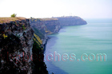
Крепост - 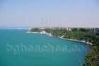
Път до морето - 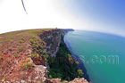
Змии - 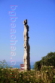
Обелиск - 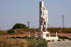
Паметник - 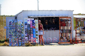
Кич - 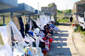
Гоблен - 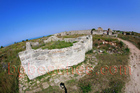
Останки от черква - 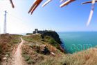
Труднодостъпна - 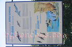
Качулат корморан и делфини - 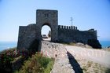
Забранено за коли - 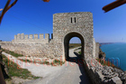
Отвътре на крепостта - 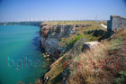
Ветрогенератори - 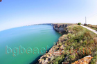
Брега - 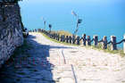
Паваж - 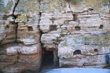
Дупки в скалите - 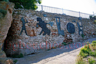
Стена - 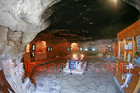
Музея - 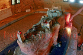
Макет - 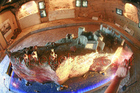
Макета отгоре - 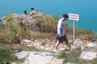
Турист - 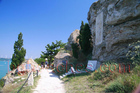
Добре поддържана - 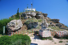
Военната база - 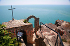
Параклис - 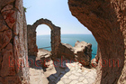
Края - 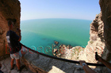
Не скачай - 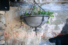
Малки детайли - 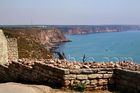
Другия край - 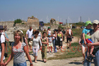
Туристи